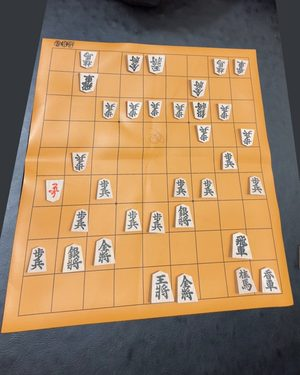
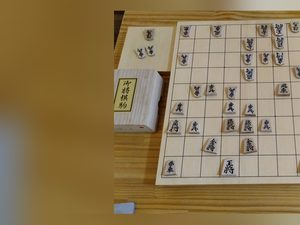
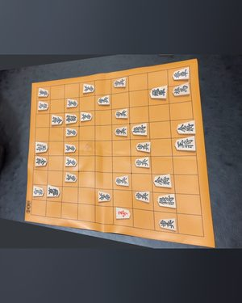
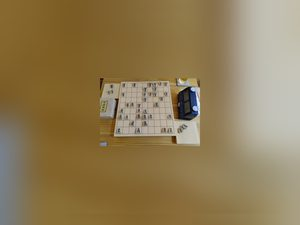
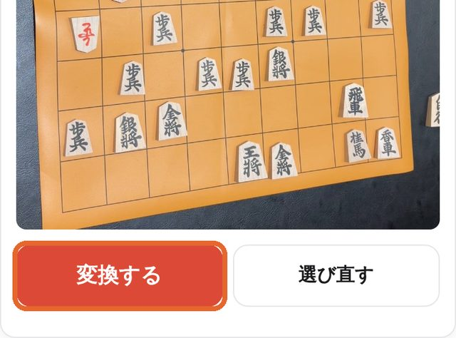
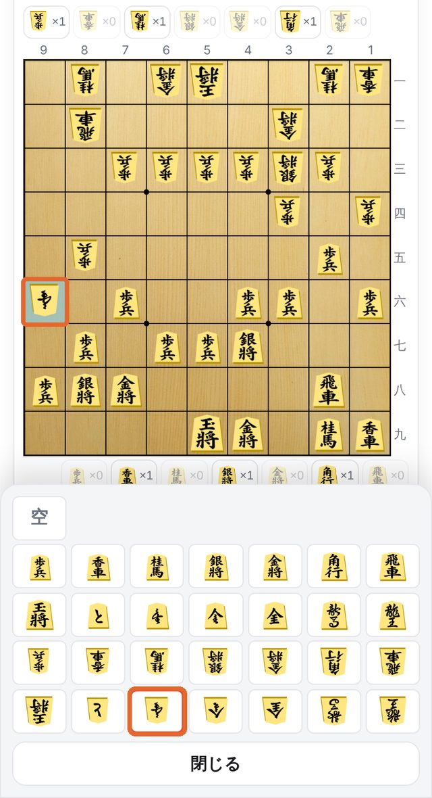
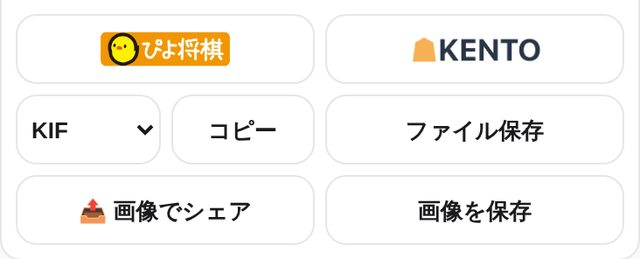

写真をKIFにする使い方
盤を1枚撮ると、その局面が KIF になります。やることは4つです。
撮ってみる1盤を撮る
盤の 9×9 と、両側の駒台がぜんぶ入るように撮ります。手前から斜めに撮ってかまいません。

○盤と駒台ぜんぶ
×切れている
×横に倒れている
×遠くて小さい
2「変換する」を押す
📷 撮影するで撮るか、🖼 画像を選ぶで撮ってあった写真をえらびます。写真が出たら変換する。数秒で盤が出ます。

3違う駒を直す
写真と見くらべて、違う駒を押します。下に一覧が出るので、正しい駒をえらびます。

持ち駒は押すと数を直せます。手番は上の先手番後手番で。
4渡す
ぴよ将棋や KENTO でそのまま検討できます。ほかのアプリには KIF・SFEN をコピーか保存。局面図は画像で残せます。
